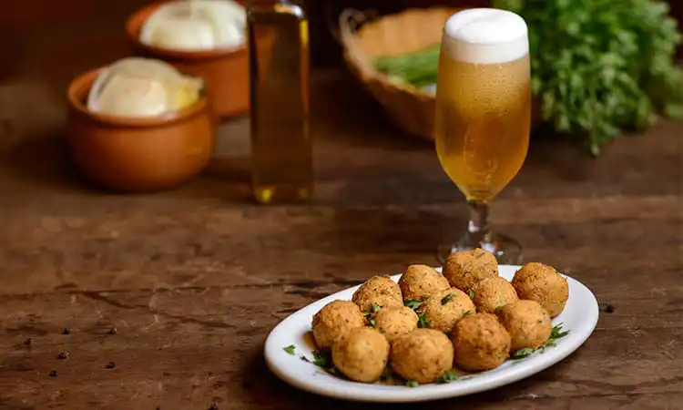
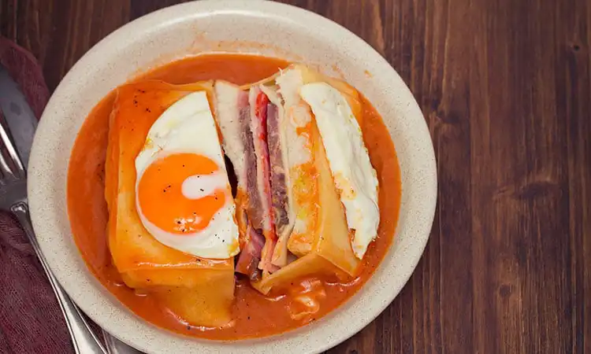
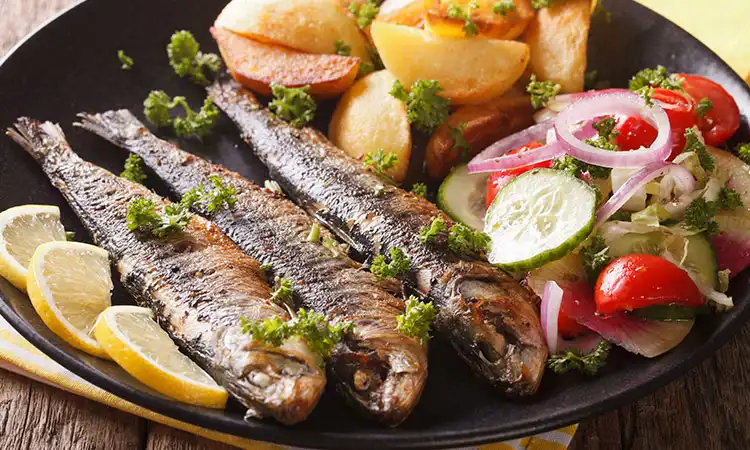
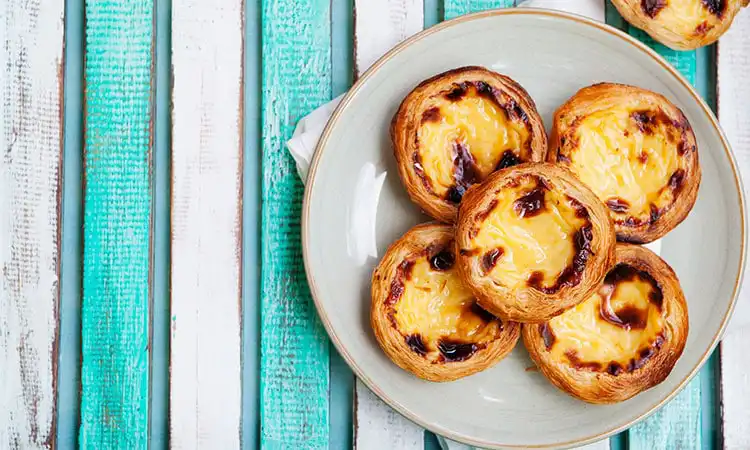

Comidas típicas

Bacalhau
O bacalhau é uma das comidas típicas de Portugal mais famosas, é o peixe mais consumido no país. Existem diversas formas de prepará-lo, como entrada ele é servido em forma de bolinho de bacalhau, pataniscas ou até mesmo cru (a punheta de bacalhau, como se fosse um ceviche). Como prato principal, ele pode ser à Gomes de Sá, à Brás, com natas, assado com batatas, frito, com broa, entre diversas outras maneiras. Normalmente o peixe é mais barato do que a carne de gado e os portugueses comem realmente muito bacalhau, que além de ser muito saboroso, é bastante saudável. Uma delícia da culinária portuguesa.
Bolinho de bacalhau
Os bolinhos de bacalhau são uma relíquia de Portugal. Crocantes por fora e macios por dentro, normalmente são servidos como entrada.

Francesinha
A francesinha (ah, a francesinha!) é uma comida típica de Portugal e um dos pratos mais gostosos do país. Todo turista que come o prato uma vez, quer voltar correndo para Portugal! Ele foi criado no Porto e no norte do país é onde se come melhor.Todos os brasileiros que experimentam amam o sabor do prato que é feito com pão, bife, linguiça, bacon, queijo, presunto, ovo e um delicioso molho com vinho do Porto, tomate e pimenta pipi-piri. São servidas com batatas fritas.

Sardinha
Muito presente nas festas de São João e de Santo Antônio, as sardinhas são feitas assadas na grelha e servidas normalmente com pimentões verdes assados e batatas cozidas.A sardinha assada faz parte da cultura portuguesa e está entres os principais pratos da sua gastronomia.

Pastel de Nata
O pastel de nata, ou simplesmente nata, é conhecido no Brasil como Pastel de Belém. Mas em Portugal, o único Pastel de Belém fica em Lisboa, na região de Belém. Foi lá que nasceu esse doce português e até hoje turistas de todo o mundo fazem filas para experimentar essa relíquia da culinária portuguesa.